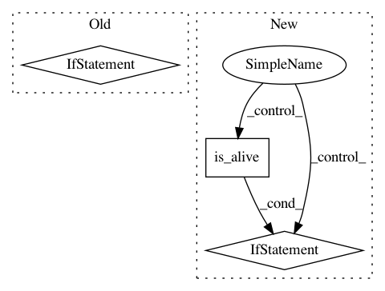

83afd0a83b743f962a6d3f7f46cf63816f4faff6,src/sos/workflow_executor.py,Base_Executor,run_as_master,#Base_Executor#Any#Any#,965
Before Change
continue
// echck if there is any message from the socket
if not proc.socket.poll(0):
continue
// receieve something from the pipe
res = proc.socket.recv_pyobj()
runnable = proc.step
// if this is NOT a result, rather some request for task, step, workflow etc
if isinstance(res, list):
After Change
// echck if there is any message from the socket
if not proc.socket.poll(0):
if proc.is_alive():
continue
else:
raise RuntimeError("Worker seems to have died.")
else:
proc.mark_alive()
// receieve something from the pipe
In pattern: SUPERPATTERN
Frequency: 4
Non-data size: 3
Instances
Project Name: vatlab/SoS
Commit Name: 83afd0a83b743f962a6d3f7f46cf63816f4faff6
Time: 2019-02-15
Author: ben.bog@gmail.com
File Name: src/sos/workflow_executor.py
Class Name: Base_Executor
Method Name: run_as_master
Project Name: keras-team/autokeras
Commit Name: b048efa4f956b80266942caea6ee8b4311e1d17a
Time: 2018-04-08
Author: jin@tamu.edu
File Name: autokeras/classifier.py
Class Name: ClassifierBase
Method Name: fit
Project Name: vatlab/SoS
Commit Name: 0c8e7a0165897014a15dcb5b6dcb71678206ae19
Time: 2019-02-16
Author: ben.bog@gmail.com
File Name: src/sos/workflow_executor.py
Class Name: ExecutionManager
Method Name: terminate